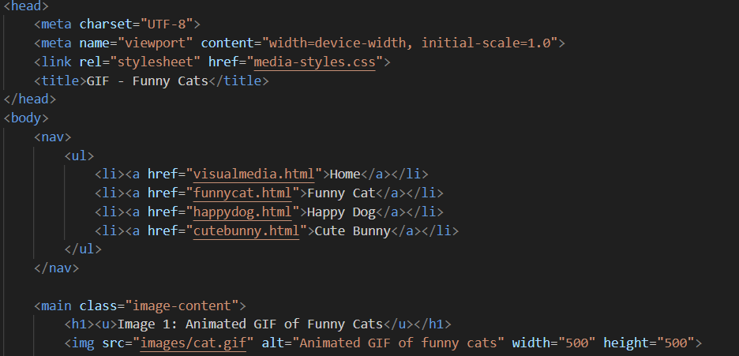
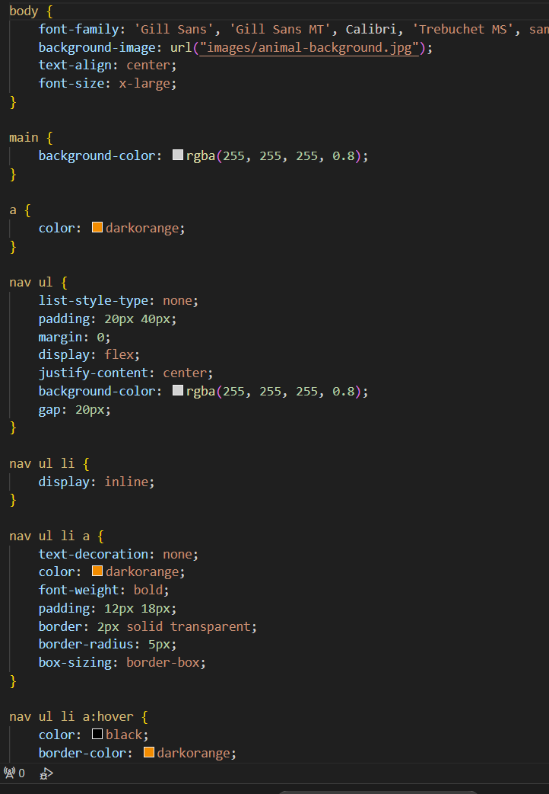

Description
- In this lab, I used images and CSS styles to create a website with visual and accessibility elements.
- This time I made a multi-page website that showcases common web graphic formats.
- This module helped me improve my skills in working with images, links, and background elements in HTML.
- I learned to fix file path and sizing errors, and change opacity for better readability.
- Overall, I realized the importance and effect of the different types of visual media in websites.
Click here to view my Lab 4 project!
Code
Here is the main part of the code for this lab:

